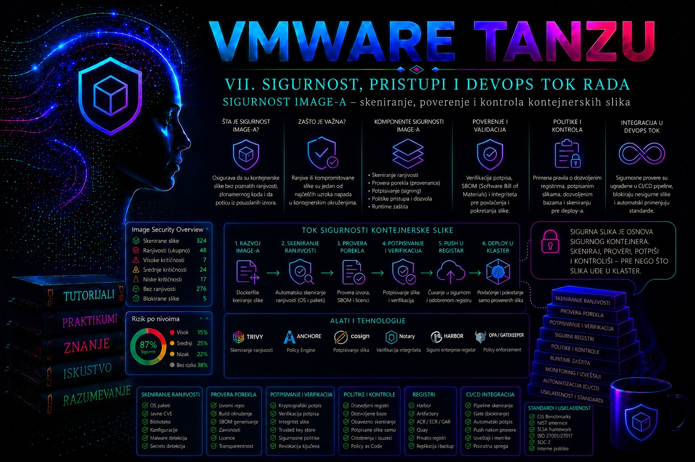

VMware & Tanzu

Kontejnerski image je izvršni artefakt koji ulazi u produkcioni klaster sa aplikacionim kodom, sistemskim bibliotekama, paketima, alatima i podrazumevanom konfiguracijom. Zbog toga odluka da se image dozvoli nije samo odluka o verziji aplikacije. Administrator istovremeno prihvata poreklo artefakta, sadržaj njegovih slojeva, poznate ranjivosti, identitet procesa koji ga je napravio i mogućnost da je artefakt promenjen nakon bezbednosne provere.
Produkcioni model zaštite zato ne sme da se zasniva na jednoj kontroli. Skeniranje otkriva poznate probleme u sadržaju, kriptografski potpis potvrđuje integritet i identitet potpisnika, digest vezuje deployment za tačno određeni artefakt, a admission politika sprečava da nepouzdan image uopšte postane Pod. Tek kombinacija ovih kontrola formira proverljiv lanac od build procesa do izvršavanja u Tanzu Kubernetes klasteru.
Šta obuhvata sigurnost kontejnerskog image-a
Sigurnost image-a obuhvata ceo životni ciklus artefakta: izbor baznog image-a, preuzimanje zavisnosti, build, generisanje softverskog inventara, skeniranje, potpisivanje, objavljivanje u registry, promociju između okruženja i proveru pri prijemu workload-a u klaster. Problem u bilo kojoj tački može proizvesti image koji radi funkcionalno, ali nije prihvatljiv za produkciju.
Administrator mora da razlikuje četiri odvojena pitanja:
- Šta se nalazi u image-u? Odgovor daju inventar paketa, SBOM i skeneri ranjivosti, tajni i pogrešnih konfiguracija.
- Da li je sadržaj poznato ranjiv? Skener poredi pakete i biblioteke sa bazama bezbednosnih obaveštenja, ali rezultat važi samo za vreme i bazu podataka korišćenu tokom skeniranja.
- Ko je proizveo ili odobrio image? Potpis ili potvrda o poreklu povezuju nepromenljivi digest sa ključem, identitetom ili kontrolisanim build sistemom.
- Da li klaster sme da ga izvrši? Admission kontrola proverava registry, digest, potpis i druge uslove pre nego što API server prihvati Pod ili njegov kontroler.
Nijedna od ovih kontrola ne zamenjuje ostale. Potpisan image može sadržati kritičnu ranjivost jer potpis potvrđuje ko ga je potpisao, a ne da je bezbedan. Image bez poznatih CVE nalaza može biti nepoverljiv ako je nastao iz nepoznatog build procesa. Referenca sa digestom sprečava neprimetnu zamenu sadržaja, ali ne dokazuje da je originalni sadržaj prihvatljiv.
Model pretnji u lancu isporuke image-a
Najčešća administrativna greška jeste posmatranje registry-ja kao pasivnog skladišta. Registry je kritična komponenta lanca isporuke. Kompromitovan nalog sa pravom upisa, pogrešno podešen javni projekat, nezaštićen CI token ili preširoka administratorska privilegija mogu omogućiti objavljivanje zlonamernog artefakta pod nazivom koji izgleda legitimno.
Važne pretnje uključuju kompromitovan bazni image, zavisnost preuzetu iz nepouzdanog izvora, tajnu slučajno upisanu u image sloj, zamenu taga nakon uspešnog testa, krađu signing ključa, manipulisanje build agentom i deployment direktno sa javnog registry-ja. Posebno je opasna upotreba promenljivih tagova kao što su latest, stable ili production. Tag je pokazivač koji se može premestiti na drugi manifest, dok puni SHA-256 digest identifikuje konkretan OCI manifest.
Pretnja nije ograničena na namerni napad. Zastareo operativni sistem u baznom image-u, paket bez podrške ili razvojni alat ostavljen u finalnom sloju povećavaju površinu napada i broj nalaza. Čak i kada aplikacija ne koristi ranjivu funkciju biblioteke, administrator mora imati dokumentovanu procenu rizika, vlasnika odluke i rok za ponovnu evaluaciju.
Skeniranje ranjivosti i značenje rezultata
Skeneri kao što je Trivy analiziraju operativne pakete i zavisnosti podržanih programskih ekosistema, a mogu generisati i SBOM, proveravati konfiguracione fajlove i tražiti obrasce koji liče na tajne. U Harbor okruženju skener može biti integrisan sa registry-jem, tako da se analiza pokreće nakon push operacije ili periodično ponavlja kada se osveži baza ranjivosti.
Rezultat skeniranja nije apsolutna potvrda da je image bezbedan. Skener prepoznaje samo klase problema za koje poseduje detekciju i dovoljno metapodataka. Nova ranjivost možda još nije objavljena, paket može biti nepravilno identifikovan, a ozbiljnost se može razlikovati između proizvođača distribucije i opštih baza. Zato administrator proverava izvor ocene, dostupnu popravljenu verziju, status paketa, ekspoziciju aplikacije i stvarnu mogućnost iskorišćavanja.
| Rezultat | Značenje | Administratorska odluka |
|---|---|---|
| CRITICAL ili HIGH sa dostupnom zakrpom | Postoji novija verzija paketa ili baznog image-a koja otklanja problem. | Zaustaviti promociju, ponovo izgraditi image i ponoviti testove. |
| CRITICAL ili HIGH bez zakrpe | Problem je poznat, ali dobavljač još nema ispravku ili paket više nije podržan. | Procena ekspozicije, kompenzacione kontrole, vremenski ograničen izuzetak ili zamena komponente. |
| UNKNOWN | Skener nema pouzdanu klasifikaciju ozbiljnosti. | Ne tretirati automatski kao bezopasno; proveriti vendor advisory i vlasništvo paketa. |
| Nema nalaza | U korišćenim izvorima i trenutnoj bazi nema prepoznatih problema. | Proveriti starost baze, uspeh skena, podržanost operativnog sistema i obuhvat skenera. |
Opcija koja ignoriše ranjivosti bez dostupne zakrpe može biti korisna za poseban izveštaj o neposredno popravljivim problemima, ali nije odgovarajuća kao jedini produkcioni kriterijum. Ona može sakriti ozbiljne nalaze koje organizacija mora da prati kompenzacionim kontrolama. Bezbedniji model je da se svi nalazi sačuvaju, a da se izuzeci vode kroz verzionisanu allowlist evidenciju sa razlogom, vlasnikom i datumom isteka.
SBOM, poreklo i potvrde o build procesu
Software Bill of Materials predstavlja inventar komponenti sadržanih u artefaktu. SBOM ubrzava odgovor kada se objavi nova ranjivost jer bez ponovnog ručnog pregleda omogućava pretragu image-a koji sadrže pogođenu biblioteku. Međutim, SBOM nije sken i nije dokaz bezbednosti. On opisuje sastav; skener taj sastav poredi sa podacima o ranjivostima.
Provenance ili potvrda o poreklu odgovara na druga pitanja: koji izvorni commit je korišćen, koji builder je izvršio postupak, koja build definicija je primenjena i koji artefakt je nastao. Standardizovane potvrde, poput SLSA provenance zapisa, treba vezivati za digest konkretnog artefakta. Time se smanjuje rizik da se valjan izveštaj ili potvrda priloži drugom image-u sa sličnim nazivom.
U zrelom sistemu CI proces proizvodi image, SBOM, izveštaj skeniranja i potpis ili attestation. Produkcioni administrator ne mora da veruje svakom nalogu koji može da izvrši docker push; on veruje određenom build identitetu, odobrenom registry projektu i pravilima koja se proveravaju pri deployment-u.
Potpisivanje, digest i poverenje
Cosign može da potpisuje OCI artefakte korišćenjem privatnog ključa, ključa u KMS ili keyless modela zasnovanog na OIDC identitetu i kratkotrajnom sertifikatu. Za enterprise produkciju privatni signing ključ ne treba čuvati na administratorskom laptopu niti u Git repozitorijumu. Preporučeni cilj je HSM ili KMS, odnosno identitet kontrolisanog CI workload-a. Lokalni par ključeva je prihvatljiv za laboratoriju i demonstraciju toka, uz strogo ograničena prava nad privatnim ključem.
Potpis se proverava nad digestom. Ako se promeni bilo koji sloj ili manifest, menja se digest i prethodni potpis više ne potvrđuje novi sadržaj. Zbog toga deployment manifest treba da koristi oblik:
harbor.tashizza.local/prod/tashizza-api@sha256:PRECIZAN_DIGESTKubernetes pri kreiranju objekta određuje imagePullPolicy, ali politika povlačenja ne predstavlja sigurnosnu verifikaciju. Vrednost Always zahteva razrešavanje reference preko registry-ja, dok lokalni slojevi i dalje mogu biti iskorišćeni kada odgovaraju istom digestu. Ona ne potvrđuje potpis, ne skenira sadržaj i ne sprečava korišćenje neodobrenog registry-ja.
Kontrola pri prijemu workload-a u klaster
Skeniranje u CI procesu smanjuje broj loših artefakata koji stižu do registry-ja, ali nije dovoljna završna kontrola. Korisnik sa Kubernetes pravima može pokušati da navede drugi image, javni registry ili nepotpisanu verziju. Admission kontroler zato proverava zahtev pre nego što API server trajno prihvati resurs.
Politika treba da obuhvati najmanje regularne kontejnere, init kontejnere i, gde platforma podržava njihovo korišćenje, ephemeral kontejnere. Takođe mora biti jasno da se deployment kontroleri na kraju pretvaraju u Pod zahteve. Politika koja proverava Pod-ove štiti izvršni trenutak čak i kada je inicijalni zahtev bio Deployment, StatefulSet, Job ili drugi kontroler.
U referentnom rešenju koristi se Kyverno ImageValidatingPolicy za proveru Cosign potpisa. U aktuelnoj Kyverno dokumentaciji CEL zasnovani resurs koristi API policies.kyverno.io/v1. Ranija izdanja koristila su razvojni v1alpha1, dok legacy ClusterPolicy model koristi verifyImages; ta dva modela nemaju istu šemu. Zato administrator pre primene proverava verziju kontrolera, CRD resurs i polja komandom kubectl explain imagevalidatingpolicy.spec. Kyverno je dodatna komponenta workload klastera, a ne mogućnost koju treba pretpostaviti samo zato što je klaster VMware Tanzu/VKS.
Verzijska i licencna granica. Harbor, Trivy, Cosign i Kyverno imaju sopstvene matrice kompatibilnosti i životne cikluse. Dostupnost Harbor skenera, SBOM prikaza, immutable tag pravila, retention funkcija i enterprise integracija zavisi od konkretnog Harbor izdanja i načina pakovanja u organizaciji. Broadcom/VMware podrška za VKS/Tanzu ne znači automatski podršku za svaku samostalno instaliranu verziju policy engine-a; pre produkcije proveravaju se VKS release notes, podržana Kubernetes verzija i support boundary dodatnih komponenti.
Politika može raditi u audit režimu pre prelaska na blokiranje. To je važan operativni korak jer otkriva postojeće workload-e koji ne ispunjavaju zahtev. Međutim, audit nije krajnja produkciona zaštita: zahtev se beleži, ali nije zaustavljen. Nakon sanacije postojećih izuzetaka, akcija se postavlja na Deny, a failurePolicy se bira u skladu sa rizikom. Za kritičnu kontrolu potpisa u produkciji uobičajen je fail-closed model, uz visoku dostupnost admission kontrolera i prethodno testiran postupak oporavka.
Referentna enterprise arhitektura
Praktikum koristi Tanzu Kubernetes workload klaster tkg-prod-01, namespace payments-prod, Harbor registry harbor.tashizza.local i projekat prod. Aplikacioni image ima naziv tashizza-api. Administratorska radna stanica koristi direktorijum /opt/tashizza/image-security. Trivy radi kao CI bezbednosna kontrola, Cosign potpisuje odobreni digest, a Kyverno proverava potpis pre prijema Pod-a.
Tok odobravanja izgleda ovako:
- CI izgradi image sa nepromenljivim tagom povezanim sa Git commitom.
- Trivy generiše JSON izveštaj i CycloneDX SBOM; CRITICAL i HIGH nalazi prekidaju promociju prema usvojenoj politici.
- Uspešno provereni image se šalje u Harbor i identifikuje punim digestom.
- Odobreni CI identitet potpisuje digest.
- Deployment referencira image po digestu.
- Kyverno admission kontrola proverava potpis i odbija nepotpisan ili neodobren artefakt.
Ova arhitektura ne rešava runtime izolaciju, privilegije procesa, mrežne politike, upravljanje Secret objektima niti ranjivosti same aplikacione logike. Image bezbednost je jedan sloj odbrane, a ne zamena za zaštitu klastera i workload-a.
Integrisani praktikum – od skeniranja do blokiranja nepotpisanog image-a
Poslovni i tehnički kontekst. Tim za plaćanja želi da postavi verziju aplikacije u produkciju. Organizacija dozvoljava samo image-e iz internog Harbor projekta prod, bez CRITICAL i popravljivih HIGH ranjivosti, potpisane kontrolisanim Cosign ključem i navedene punim digestom. Administrator mora dokazati da odobreni image prolazi, a nepotpisani image biva odbijen pre kreiranja Pod-a.
Cilj. Skenirati image, sačuvati izveštaj i SBOM, objaviti i potpisati tačan digest, aktivirati admission politiku i sprovesti pozitivan i negativan test.
Referentno okruženje. Radna stanica ima instalirane docker, trivy, cosign i kubectl. Harbor koristi pouzdan TLS sertifikat. Kyverno je već instaliran u klasteru. Primer koristi laboratorijski lokalni signing ključ; u produkciji ga treba zameniti KMS/HSM ključem ili odobrenim keyless CI identitetom.
Potrebna prava. Korisnik registry-ja mora imati push pravo samo u projektu prod. Kubernetes operator mora moći da čita namespace i workload objekte. Za kreiranje klasterske admission politike potrebna je posebno odobrena privilegija nad Kyverno policy resursima. Aplikacionom timu nije potrebno pravo izmene klasterske politike.
Preduslovi. DNS i TLS pristup adresi harbor.tashizza.local moraju raditi; projekat prod i namespace payments-prod moraju postojati; Trivy baza mora biti ažurirana; promenljiva HARBOR_USER mora sadržati korisničko ime, dok se lozinka unosi interaktivno ili preuzima iz odobrenog secrets sistema.
-
Napraviti radni direktorijum i potvrditi kontekst.
Pre bilo kakve promene administrator proverava da komande ciljaju klaster
tkg-prod-01i da postoje potrebni resursi. Pogrešan Kubernetes kontekst predstavlja realan produkcioni rizik.
Validacija: trenutni kontekst mora bitisudo install -d -m 0750 -o "$USER" -g "$(id -gn)" /opt/tashizza/image-security cd /opt/tashizza/image-security kubectl config current-context kubectl get namespace payments-prod kubectl get crd imagevalidatingpolicies.policies.kyverno.io kubectl -n kyverno get deployments,podstkg-prod-01, namespace mora imati statusActive, CRD mora postojati, a Kyverno Pod-ovi moraju bitiRunningi spremni. Ako CRD ne postoji, manifest iz ovog praktikuma se ne primenjuje dok se ne proveri kompatibilna Kyverno verzija. -
Definisati dosledne promenljive artefakta.
Ne koristi se promenljivi tag
latest. Verzija1.4.0predstavlja izdanje koje je već prošlo aplikacione testove.
Validacija: ispis mora bitiexport REGISTRY="harbor.tashizza.local" export PROJECT="prod" export APP="tashizza-api" export VERSION="1.4.0" export IMAGE="${REGISTRY}/${PROJECT}/${APP}:${VERSION}" printf 'Target image: %s\n' "$IMAGE"harbor.tashizza.local/prod/tashizza-api:1.4.0. Ove vrednosti se koriste u svim sledećim koracima. -
Prijaviti se u registry bez zapisivanja lozinke u shell istoriju.
Lozinka se ne navodi kao argument komande jer bi mogla ostati vidljiva u istoriji ili listi procesa.
Validacija: komanda mora prijaviti uspešnu autentikaciju. Neuspeh sa porukomprintf 'Harbor password: ' read -r -s HARBOR_PASSWORD printf '\n' printf '%s' "$HARBOR_PASSWORD" | docker login "$REGISTRY" \ --username "$HARBOR_USER" \ --password-stdin unset HARBOR_PASSWORDx509ukazuje na problem poverenja u TLS lanac; ne treba ga zaobilaziti podešavanjem nesigurnog registry-ja, već instalirati ispravan CA sertifikat. -
Izgraditi referentni image minimalnog sadržaja.
Kreiraju se jednostavna aplikaciona datoteka i Dockerfile. Bazni image je namerno jasno verzionisan; u produkciji bi i on trebalo da bude pinovan digestom i preuzet kroz kontrolisani mirror.
Validacija: lokalni image mora postojati, a istorija slojeva treba da odgovara očekivanom Dockerfile-u.cat > index.html <<'EOF' <!doctype html> <html lang="sr"> <head><meta charset="utf-8"><title>Tashizza API</title></head> <body><h1>tashizza-api 1.4.0</h1></body> </html> EOF cat > Dockerfile <<'EOF' FROM nginxinc/nginx-unprivileged:1.27.5-alpine COPY index.html /usr/share/nginx/html/index.html USER 101 EXPOSE 8080 EOF docker build --pull --no-cache -t "$IMAGE" .
Očekuje se korisnikdocker image inspect "$IMAGE" \ --format 'ID={{.Id}} Created={{.Created}} User={{.Config.User}}' docker history --no-trunc "$IMAGE"101. Napomena: podrazumevani NGINX image i konkretna non-root konfiguracija moraju biti funkcionalno provereni; samo postavljanje direktiveUSERne garantuje da aplikacija može da piše u potrebne direktorijume ili sluša na privilegovanom portu. -
Pokrenuti bezbednosni scan i sačuvati dokaz.
Prvi scan generiše kompletan JSON za audit. Drugi služi kao CI gate i vraća nenulti izlazni kod kada postoje HIGH ili CRITICAL nalazi. Nalazi bez zakrpe se ne skrivaju.
Validacija: druga komanda mora završiti kodomtrivy image \ --scanners vuln,secret \ --format json \ --output trivy-report.json \ "$IMAGE" trivy image \ --scanners vuln,secret \ --severity HIGH,CRITICAL \ --exit-code 1 \ "$IMAGE"0. Ako završi kodom1, promocija se prekida. Administrator utrivy-report.jsonproverava ID ranjivosti, paket, instaliranu verziju, popravljenu verziju i izvor ozbiljnosti. Samo ponovno pokretanje komande bez izmene image-a nije sanacija. -
Generisati SBOM i proveriti da datoteke nisu prazne.
CycloneDX SBOM ostaje vezan za izdanje kao inventar komponenti.
Validacija: obe datoteke moraju imati sadržaj, atrivy image \ --format cyclonedx \ --output tashizza-api-1.4.0.cdx.json \ "$IMAGE" test -s trivy-report.json test -s tashizza-api-1.4.0.cdx.json sha256sum trivy-report.json tashizza-api-1.4.0.cdx.json \ > evidence.sha256 cat evidence.sha256evidence.sha256dva kontrolna zbira. U produkciji se izveštaj, SBOM i kontrolni zbirovi čuvaju u kontrolisanom artifact sistemu sa pravilima retencije, a ne samo na radnoj stanici. -
Objaviti image i utvrditi registry digest.
Lokalni image ID nije zamena za OCI registry digest. Tek nakon push operacije dobija se referenca koju deployment i potpis treba da koriste.
Validacija:docker push "$IMAGE" DIGEST="$(docker buildx imagetools inspect "$IMAGE" \ --format '{{json .Manifest.Digest}}' | tr -d '"')" IMAGE_BY_DIGEST="${REGISTRY}/${PROJECT}/${APP}@${DIGEST}" printf 'Digest: %s\nImmutable reference: %s\n' \ "$DIGEST" "$IMAGE_BY_DIGEST"DIGESTmora početi sasha256:, a nepromenljiva referenca mora sadržati znak@. Ako korišćena Docker verzija ne podržava dati format, digest se proverava odgovarajućim OCI alatom ili Harbor API-jem, ali se ne prepisuje ručno iz nepouzdanog izvora. -
Kreirati laboratorijski Cosign ključ.
Upozorenje: privatni ključ omogućava izdavanje poverljivih potpisa. Sledeći postupak je samo za kontrolisani laboratorijski scenario. U produkciji koristiti KMS/HSM ili workload identitet CI sistema.
Validacija: privatni ključ mora imati pravaumask 077 export COSIGN_PASSWORD='LAB_ONLY_REPLACE_WITH_SECRET_MANAGER_VALUE' cosign generate-key-pair chmod 0600 cosign.key chmod 0644 cosign.pub ls -l cosign.key cosign.pub0600, a javni ključ može biti čitljiv. VrednostCOSIGN_PASSWORDse ne sme čuvati u shell profilu, Git-u ili manifestu. U realnom toku preuzima se kratkotrajno iz secrets sistema. -
Potpisati isključivo provereni digest.
Potpisivanje taga ostavlja prostor da tag kasnije pokaže na drugi sadržaj. Zato se potpisuje
IMAGE_BY_DIGEST.
Validacija: potpis se odmah proverava javnim ključem.cosign sign \ --key cosign.key \ --yes \ "$IMAGE_BY_DIGEST"
Provera mora biti uspešna i izlaz mora biti vezan za očekivani digest. Potpisivanje nije odobrenje ako prethodni bezbednosni gate nije prošao; CI mora tehnički onemogućiti preskakanje redosleda.cosign verify \ --key cosign.pub \ "$IMAGE_BY_DIGEST" \ > cosign-verification.json test -s cosign-verification.json grep -F "$DIGEST" cosign-verification.json -
Kreirati admission politiku sa javnim ključem.
Javni ključ se ugrađuje u manifest politike. Prvo se generiše lokalna datoteka, zatim se radi serverska provera pre stvarne promene.
Validacija: serverski dry-run mora prihvatiti objekat bez greške šeme. Ako API odbije polje, ne treba nasumično menjati manifest; proveravaju se instalirana Kyverno verzija i njena odgovarajuća API referenca. Tek nakon uspešne provere politika se primenjuje:PUBKEY_INDENTED="$(sed 's/^/ /' cosign.pub)" cat > verify-tashizza-images.yaml <<EOF apiVersion: policies.kyverno.io/v1 kind: ImageValidatingPolicy metadata: name: verify-tashizza-prod-images spec: failurePolicy: Fail webhookConfiguration: timeoutSeconds: 15 evaluation: background: enabled: false validationActions: - Deny matchConstraints: namespaceSelector: matchLabels: tashizza.local/image-trust: enforced resourceRules: - apiGroups: - "" apiVersions: - v1 operations: - CREATE - UPDATE resources: - pods matchImageReferences: - glob: "harbor.tashizza.local/prod/tashizza-api*" attestors: - name: tashizzaCosignKey cosign: key: data: | ${PUBKEY_INDENTED} validationConfigurations: required: true verifyDigest: true mutateDigest: false validations: - expression: >- images.containers.map(image, verifyImageSignatures(image, [attestors.tashizzaCosignKey])).all(result, result > 0) message: "Image mora imati važeći potpis odobrenog Tashizza Cosign ključa." EOF kubectl apply --server-side --dry-run=server \ -f verify-tashizza-images.yamlkubectl apply --server-side -f verify-tashizza-images.yaml kubectl get imagevalidatingpolicy verify-tashizza-prod-images -o yaml -
Označiti samo ciljni namespace za enforcement.
Selektor sprečava nenamerno obuhvatanje celog klastera tokom prve implementacije. Promena labele je kontrolisana tačka aktiviranja politike.
Validacija: namespace mora prikazati labelukubectl label namespace payments-prod \ tashizza.local/image-trust=enforced \ --overwrite kubectl get namespace payments-prod --show-labelstashizza.local/image-trust=enforced. Pre šire primene treba napraviti inventar sistemskih i poslovnih namespace-ova jer neki vendor workload-i mogu imati poseban model potpisivanja. -
Postaviti potpisani image punim digestom.
Kreira se Deployment koji koristi isti nepromenljivi artefakt koji je skeniran i potpisan.
Validacija: API server mora prihvatiti zahtev, a Deployment mora dobiti dve dostupne replike. Ako admission provera uspe, ali Pod-ovi nisu spremni, problem više nije nužno potpis: proveravaju se Events, registry autentikacija, port, prava nad filesystem-om i aplikacioni logovi.cat > tashizza-api-deployment.yaml <<EOF apiVersion: apps/v1 kind: Deployment metadata: name: tashizza-api namespace: payments-prod labels: app.kubernetes.io/name: tashizza-api spec: replicas: 2 selector: matchLabels: app.kubernetes.io/name: tashizza-api template: metadata: labels: app.kubernetes.io/name: tashizza-api spec: containers: - name: api image: ${IMAGE_BY_DIGEST} imagePullPolicy: IfNotPresent ports: - name: http containerPort: 8080 securityContext: allowPrivilegeEscalation: false capabilities: drop: - ALL runAsNonRoot: true resources: requests: cpu: 50m memory: 64Mi limits: cpu: 250m memory: 128Mi EOF kubectl apply --server-side -f tashizza-api-deployment.yaml kubectl -n payments-prod rollout status \ deployment/tashizza-api \ --timeout=180skubectl -n payments-prod get deployment,pods -o wide kubectl -n payments-prod describe deployment tashizza-api kubectl -n payments-prod get events \ --sort-by=.metadata.creationTimestamp | tail -n 20 -
Sprovesti negativni test sa nepotpisanim image-om.
Test dokazuje da kontrola blokira zahtev, a ne samo da valjani image može da radi. Koristi se drugi image iz istog registry obrasca koji nije potpisan odobrenim ključem.
Očekivani rezultat: poslednja komanda mora biti odbijena admission porukom koja ukazuje da zahtevani potpis nije pronađen ili nije potvrđen od odobrenog attestor-a. Podprintf '\n<!-- unsigned negative test -->\n' >> index.html docker build --no-cache \ -t "${REGISTRY}/${PROJECT}/${APP}:unsigned-test" . docker push "${REGISTRY}/${PROJECT}/${APP}:unsigned-test" UNSIGNED_DIGEST="$(docker buildx imagetools inspect \ "${REGISTRY}/${PROJECT}/${APP}:unsigned-test" \ --format '{{json .Manifest.Digest}}' | tr -d '"')" test "$UNSIGNED_DIGEST" != "$DIGEST" kubectl -n payments-prod run unsigned-test \ --image="${REGISTRY}/${PROJECT}/${APP}@${UNSIGNED_DIGEST}" \ --restart=Neverunsigned-testne sme postojati.
Očekuje sekubectl -n payments-prod get pod unsigned-testNotFound. Ako Pod postoji, kriterijum prihvatanja nije ispunjen i deployment zaštita se smatra neispravnom bez obzira na uspešan pozitivan test. -
Pregledati logove i razlikovati tip problema.
Kyverno admission logovi pokazuju rezultat evaluacije politike, greške pristupa registry-ju, timeout i neuspešnu verifikaciju. Kubernetes Events pokazuju probleme koji nastaju nakon prijema, kao što su
ImagePullBackOffiliErrImagePull.
Tumačenje: admission denial znači da objekat nije prihvaćen.kubectl -n kyverno logs \ -l app.kubernetes.io/component=admission-controller \ --since=15m \ --all-containers=true \ | grep -E 'verify-tashizza-prod-images|unsigned-test|error|denied' kubectl -n payments-prod get events \ --sort-by=.metadata.creationTimestamp | tail -n 30ImagePullBackOffznači da je Pod prihvaćen, ali kubelet nije uspeo da preuzme image.CrashLoopBackOffznači da je image preuzet i proces pokrenut, ali se kontejner ruši. Ove situacije zahtevaju različite reakcije. -
Dokumentovati dokaz o prihvatanju.
Čuvaju se digest, politika, scan izveštaj, SBOM, rezultat verifikacije i izlaz pozitivnog i negativnog testa.
Validacija: sve navedene datoteke moraju postojati, a kontrolni zbirovi moraju moći ponovo da se provere komandomkubectl get imagevalidatingpolicy verify-tashizza-prod-images \ -o yaml > applied-image-policy.yaml kubectl -n payments-prod get deployment tashizza-api \ -o yaml > deployed-tashizza-api.yaml printf '%s\n' "$IMAGE_BY_DIGEST" > approved-image.txt sha256sum approved-image.txt \ applied-image-policy.yaml \ deployed-tashizza-api.yaml \ trivy-report.json \ tashizza-api-1.4.0.cdx.json \ cosign-verification.json \ > final-evidence.sha256sha256sum -c final-evidence.sha256. Evidencija promene treba da sadrži broj change zahteva, vlasnika aplikacije, odobreni digest i rezultat negativnog testa.
Rollback i cleanup
Rollback aplikacije ne znači automatsko isključivanje sigurnosne politike. Ako nova verzija ima funkcionalni problem, vraća se prethodni odobreni i potpisani digest. Deployment history je koristan, ali administrator pre rollback-a proverava da li prethodni ReplicaSet i dalje referencira artefakt koji zadovoljava aktuelnu politiku.
kubectl -n payments-prod rollout history deployment/tashizza-api
kubectl -n payments-prod rollout undo deployment/tashizza-api
kubectl -n payments-prod rollout status deployment/tashizza-api --timeout=180sAko sama admission politika izaziva incident, prvo se procenjuje da li je problem nedostupnost registry-ja, Kyverno kvar, pogrešan ključ ili greška selektora. Bezbedniji privremeni rollback obuhvata uklanjanje enforcement labele samo sa pogođenog namespace-a, uz incident zapis i vremenski ograničenu odluku:
kubectl label namespace payments-prod \
tashizza.local/image-trust-
kubectl get namespace payments-prod --show-labelsBrisanje klasterske politike ima širi uticaj i ne treba ga koristiti kao prvi odgovor. Laboratorijski cleanup uklanja test objekte, ali ne briše produkcioni deployment:
kubectl -n payments-prod delete pod unsigned-test \
--ignore-not-found
rm -f cosign.key
unset COSIGN_PASSWORDUpozorenje: brisanje privatnog ključa bez sigurnosne kopije može onemogućiti buduće potpisivanje istim identitetom. U produkciji se lifecycle ključa vodi kroz formalnu rotaciju, opoziv i KMS/HSM politiku, a ne kroz ručno brisanje datoteke.
Tipične greške i dijagnostika
Dijagnostika počinje read-only proverama: zabeležiti vreme i korisnika zahteva, Kubernetes kontekst, tačnu image referencu, digest, poslednju promenu politike i odgovor API servera. Tek zatim se korelišu Kyverno admission logovi, Kubernetes audit zapis, Harbor access/audit trag i CI evidencija. Ne treba odmah menjati failurePolicy, ključ ili namespace labelu, jer se time uklanja dokaz i može proširiti incident.
| Simptom i obim | Neposredni uzrok koji se proverava | Osnovni uzrok i dokaz | Bezbedna korekcija i potvrda |
|---|---|---|---|
| Samo novi Pod-ovi u označenom namespace-u dobijaju admission denial. | Potpis nedostaje, digest se razlikuje ili registry nije dostupan kontroleru. | Uporediti digest iz zahteva, cosign verify rezultat, policy glob i Kyverno log u istom vremenskom prozoru. |
Ponovo izgraditi i potpisati pravi digest ili ispraviti usko ograničenu policy grešku; ponoviti pozitivan i negativan test. |
| Svi admission zahtevi kasne ili se odbijaju. | Webhook nema spremne endpoint-e, istekao je TLS sertifikat ili verifikacija registry-ja prelazi timeout. | Proveriti Deployment, EndpointSlice, Events, webhook sertifikat, mrežnu putanju, DNS i metrike latencije. | Oporaviti visoko dostupne replike ili TLS lanac. Break-glass izuzeće mora biti vremenski ograničeno i obuhvatiti samo pogođeni namespace. |
Pod je prihvaćen, ali je u stanju ImagePullBackOff. |
Kubelet nema registry kredencijale, DNS/TLS putanju ili artefakt ne postoji. | Admission je već prošao; dokaz su Pod Events i odsustvo denial zapisa. Proveriti imagePullSecrets i postojanje istog digest-a. |
Ispraviti registry pristup bez gašenja politike potpisa; potvrditi uspešno povlačenje i Ready stanje. |
| Ranije odobren image dobija novi CRITICAL nalaz. | Osvežena baza ranjivosti prepoznala je ranije nepoznat CVE. | SBOM, novi scan, vendor advisory i inventar aktivnih Pod digest-a potvrđuju obim. | Procena ekspozicije, kompenzacione kontrole i hitan rebuild; opozvati poverenje ili blokirati digest kada rizik to zahteva. |
- Image je skeniran, ali deployment koristi drugi digest. Uporediti vrednost iz scan evidencije,
cosign verifyizlaza ikubectl get pod -o jsonpath. Svako odstupanje znači da dokaz ne pripada izvršenom artefaktu. - Potpis postoji, ali ga admission kontroler ne prihvata. Proveriti javni ključ, registry putanju, glob obrazac, format potpisa, mrežni pristup registry-ju i Kyverno logove. Potpis drugim ključem nije prihvatljiv potpis.
- Politika proverava samo aplikacione kontejnere. Init ili ephemeral kontejner može postati zaobilazni put. Proveriti dokumentaciju konkretne verzije policy engine-a i testirati sve podržane lokacije image reference.
- Scan nema nalaze zbog zastarele baze. Pregledati vreme poslednjeg ažuriranja Trivy baze i log preuzimanja baze. Nulti broj nalaza nije dovoljan dokaz uspešnog skena.
- Koristi se globalna CVE allowlist bez roka. Time se nalaz može sakriti u svim projektima. Prednost ima usko ograničen izuzetak sa datumom isteka, poslovnim vlasnikom i dokumentovanim kompenzacionim merama.
- Tag je potpisan, a zatim ponovo iskorišćen. Deployment mora koristiti digest. Registry projekat treba da zabrani prepisivanje release tagova kada podržava immutable tag pravila.
- Fail-closed politika blokira promene tokom kvara kontrolera. Obezbediti više replika admission kontrolera, PodDisruptionBudget, monitoring latencije i testiran break-glass postupak. Prelazak na fail-open bez procene rizika uklanja zaštitu upravo tokom incidenta.
Kriterijumi prihvatanja
- Trivy gate završava izlaznim kodom
0za odobreni image prema definisanoj HIGH/CRITICAL politici. - JSON scan izveštaj, CycloneDX SBOM i njihovi SHA-256 kontrolni zbirovi postoje u evidenciji izdanja.
- Deployment manifest koristi puni
sha256digest, a ne samo tag. cosign verifyuspešno potvrđuje isti digest javnim ključem koji koristi admission politika.- Kyverno policy objekat postoji, spreman je za evaluaciju i obuhvata namespace
payments-prod. - Potpisani image proizvodi dve dostupne replike Deployment-a
tashizza-api. - Nepotpisani testni image biva odbijen i Pod
unsigned-testne postoji. - Logovi admission kontrolera sadrže zapis negativnog testa, a evidencija promene sadrži odobreni digest i rezultate validacije.
Administratorske prakse
Kontinuirano ponovno skeniranje. Registry image-i se ponovo skeniraju nakon svakog ažuriranja vulnerability baze i najmanje jednom dnevno za produkcione projekte. Proveravaju se Harbor scan status, Trivy job logovi i broj novih CRITICAL/HIGH nalaza. Novi CRITICAL nalaz ili neuspešan scan zahteva otvaranje incidenta ili security zadatka, identifikovanje svih aktivnih digest-a i obaveštavanje vlasnika aplikacije. U CMDB-u ili vulnerability sistemu dokumentuju se digest, CVE, ekspozicija, odluka i rok sanacije. Uspešnost se meri vremenom od objave nalaza do identifikacije pogođenih workload-a i vremenom do ponovnog build-a.
Kontrola starosti baznih image-a. Posle svakog release-a i najmanje mesečno proveravaju se datum baznog image-a, status podrške distribucije i dostupnost novog odobrenog digest-a. CI izveštaj ili SBOM pokazuje OS porodicu i pakete, dok registry evidencija pokazuje vreme push-a. EOL operativni sistem ili bazni image stariji od internog praga zahteva plan migracije. Dokumentuju se vlasnik baznog image-a, planirana verzija i datum ponovnog build-a. Praksa je uspešna kada nijedan produkcioni image ne koristi nepodržanu bazu bez formalnog izuzetka.
Praćenje admission kontrole. Kontinuirano se prate dostupnost Kyverno Pod-ova, restart count, webhook latencija, broj denied zahteva i greške pristupa registry-ju. Nakon upgrade-a klastera, Kyverno-a, registry-ja ili CA sertifikata obavezno se sprovode pozitivan i negativan test. Timeout, rast grešaka ili nedostupna replika zahteva prvo proveru Events, admission logova, mrežne putanje i TLS lanca. Rezultati se beleže u operativnom dnevniku i monitoringu. Uspešnost znači da negativni test ostaje blokiran, a legitimni zahtev prolazi unutar dogovorenog vremena.
Rotacija signing identiteta. Ključevi se inventarišu i rotiraju prema politici organizacije, kao i odmah nakon sumnje na kompromitovanje. Proveravaju se KMS audit logovi, dozvole CI identiteta i lista javnih ključeva prihvaćenih u admission politici. Neočekivana signing operacija ili korišćenje ključa van odobrenog pipeline-a zahteva obustavu promocije, opoziv poverenja i istragu svih digest-a potpisanih u pogođenom periodu. Dokumentuju se fingerprint ključa, vlasnik, datum aktivacije, datum povlačenja i pogođene politike. Uspešnost se potvrđuje testom da novi ključ prolazi, a povučeni više ne prolazi.
Upravljanje izuzecima. Svaki CVE ili policy izuzetak mora imati tehničko obrazloženje, poslovnog vlasnika, kompenzacione kontrole i datum isteka. Lista se proverava nedeljno i nakon objave zakrpe. Istekao izuzetak, odsustvo vlasnika ili dostupna popravljena verzija zahteva prekid promocije i ponovno otvaranje sanacije. Evidencija se vodi u centralnom risk ili ticket sistemu, ne u privatnoj tabeli administratora. Uspešnost se meri procentom izuzetaka sa važećim rokom i smanjenjem prosečnog trajanja izuzetka.
Backup i oporavak dokaza i konfiguracije. Čuvaju se registry baza i konfiguracija prema Harbor backup proceduri, policy manifesti u verzionisanom Git repozitorijumu, javni ključevi, SBOM, scan izveštaji i audit zapisi. Privatni ključevi se čuvaju kroz KMS/HSM backup i recovery mehanizam dobavljača, nikada kao nezaštićena kopija. Backup se radi prema RPO zahtevu platforme, a integritet se proverava kontrolnim zbirovima i periodičnim probnim restore-om u izolovanom okruženju. Restore je uspešan tek kada je moguće pronaći artefakt po digestu, proveriti njegov potpis, učitati policy konfiguraciju i uspešno izvršiti pozitivan i negativan admission test.
Završna kontrolna lista
- Potvrđen je Kubernetes kontekst
tkg-prod-01pre primene promene. - Trivy baza je ažurna, scan je uspešno završen i sačuvan je kompletan JSON izveštaj.
- Za image je generisan CycloneDX SBOM i provereni su kontrolni zbirovi evidencije.
- Nema nedokumentovanih CRITICAL ili HIGH nalaza koji krše produkcionu politiku.
- Harbor referenca je zabeležena punim SHA-256 digestom.
- Potpis je verifikovan odobrenim javnim ključem nad istim digestom.
- Deployment ne koristi
latestniti drugi promenljivi tag kao jedinu referencu. - Admission politika je serverski validirana pre primene i selektor obuhvata samo planirane namespace-ove.
- Pozitivni test daje dve dostupne replike aplikacije.
- Negativni test odbija nepotpisani image i testni Pod nije kreiran.
- Pregledani su Kyverno logovi i Kubernetes Events bez neočekivanih grešaka.
- Digest, policy manifest, SBOM, scan i rezultat testova priloženi su change evidenciji.
- Postoji dokumentovan rollback i vremenski ograničen break-glass postupak.
Zaključak
Administrator nakon ove lekcije treba da razume da bezbednost image-a nije jednokratno skeniranje pre deployment-a. Pouzdan tok zahteva nepromenljivu identifikaciju digestom, proveru poznatih ranjivosti, inventar komponenti, dokaz o odobrenom poreklu, kriptografski potpis i tehničko sprovođenje pravila na ulazu u klaster.
Praktična odgovornost administratora obuhvata proveru tačnog artefakta, čuvanje dokaza, validaciju admission politike, razlikovanje admission greške od problema povlačenja ili pokretanja image-a i bezbedan rollback na prethodni odobreni digest. Posebno mora prepoznati da potpis ne potvrđuje odsustvo ranjivosti, da scan ne potvrđuje identitet proizvođača i da tag nije nepromenljivi identifikator.
Promena poverljivih ključeva, globalnih policy pravila, registry sigurnosnih pragova i fail-open/fail-closed ponašanja prevazilazi rutinsko aplikaciono administriranje i zahteva formalno odobrenje vlasnika platforme i bezbednosti. Sumnja na krađu signing ključa, kompromitovanje build sistema, neobjašnjiv potpis ili nemogućnost utvrđivanja porekla aktivnog image-a razlog su za neposrednu eskalaciju, zaustavljanje promocije i kontrolisanu istragu lanca isporuke.